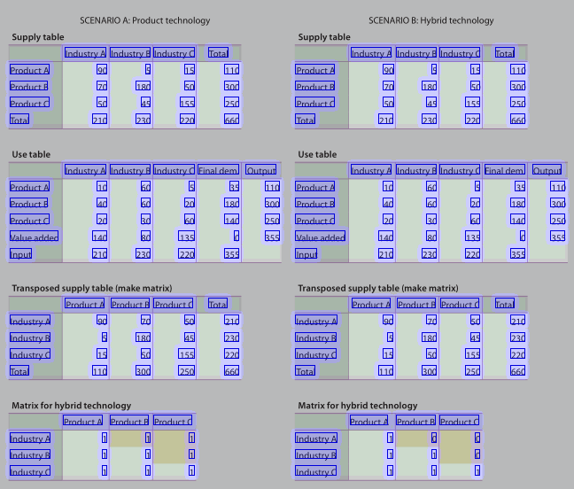

The aim of this competition is to evaluate the performance of state of the art methods for table detection (TRACK A) and table recognition (TRACK B). For the first track, document images containing one or several tables are provided. For TRACK B two subtracks exist: the first subtrack (B.1) provides the table region. Thus, only the table structure recognition must be performed. The second subtrack (B.2) provides no a-priori information. This means, the table region and table structure detection has to be done. The Ground Truth is provided in a similar format as for the ICDAR 2013 competition (see [2]):
<?xml version="1.0" encoding="UTF-8"?>
<document filename="filename.jpg">
< table id="Table_1540517170416_3" >
<Coords points="180,160 4354,160 4354,3287 180,3287"/>
<cell id='TableCell_1540517477147_58' start-row='0' start-col='0' end-row='1' end-col='2'>
<Coords points="180,160 177,456 614,456 615,163"/>
</cell>
...
</table>
...
</document>
The difference to Gobel et al. [2] is the Coords tag which defines a table/cell as a polygon specified by a list of coordinates. For B.1 the table and its coordinates is given together with the input image.
For the modern dataset, the convex hull of the content describes a cell region. For the historical dataset, it is requested that the output region of a cell is the cell boundary. This is necessary due to the characteristics of handwritten text, which is often overlapping with different cells.
The submitted result file has to be a compressed tar file (.tar.gz) containing separate xml result files for each image in the test set. The folder structure must not be changed. Do not include the images in the result file. Even if your algorithm doesn’t detect any table on a certain image, you have to provide an “empty” result file. Please send your results to cTDAR@cvl.tuwien.ac.at
Input:
/a/table1.jpg
Requested output:
/a/table1.jpg.xml with the table region information:
<?xml version="1.0" encoding="UTF-8"?>
<document filename="table1.jpg">
< table id="0" >
<Coords points="87,117 87,220 551,220, 551,87"/>
</table>
</document>
Track B.1
Input:
/a/table1.jpg + /a/table1.xml (specifying the table region)
Track B.2
Input:
/a/table1.jpg
Requested output for both tracks:
<?xml version="1.0" encoding="UTF-8"?>
<document filename="table1.jpg">
< table id="0" >
<Coords points="87,117 87,220 551,220, 551,87"/>
<cell id='0' start-row='0' start-col='0' end-row='1' end-col='2'>
<Coords points="180,160 177,456 614,456 615,163"/>
</cell>
...
</table>
...
</document>
The coords of a cell are defined by the convex hull of the content of a cell (modern dataset) or are defined by the cell border (historical dataset).
Example image of the modern dataset:
Example image of the modern dataset:

[1] L. Gao, X. Yi, Z. Jiang, L. Hao and Z. Tang, “ICDAR 2017 POD Competition,” in ICDAR, 2017, pp. 1417-1422.
[2] M. C. Gobel, T. Hassan, E. Oro, G. Orsi, ”ICDAR2013 Table Competition,” in Proc. of the 12th ICDAR (IEEE, 2013), pp. 1449-1453.
To participate in this competition, please click here.